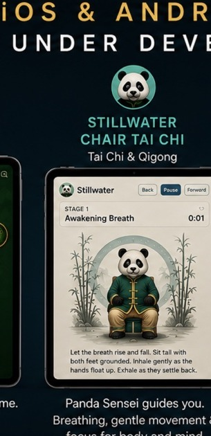

Stillwater
Chair Tai Chi
Find a calmer, more focused way to breathe and move with Sage, your Panda Sensei. Stillwater guides you through accessible Chair Tai Chi and Qigong sessions built around gentle movement, mindful breathing, and steady practice. A freemium experience provides guided lessons, with optional computer-vision features that can recognize your movements through the camera and offer gentle corrections.
- Panda Sensei-guided Chair Tai Chi
- Gentle Qigong and breathing sessions
- Accessible seated movement
- Freemium lesson experience
- Optional camera-based movement feedback
- Currently being developed for iOS, Android and the Web.